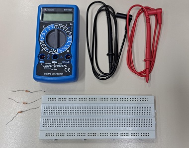

Para a realizaçao ultilizamos uma placa de ensaio, resistores e multimetro
Nos ultilizamos uma placa de ensaio e resitores, nas seguintes cores laranja e marrom, seguindo com o valor de 330 ohm. Primeiramente, colocamos o resitor e depois medimos eles colocando cabo positivo e negativo, vendo se os valores chegam aproximadamente.


Bom para não ficar repetivo, vou explicar de maneira geral, nos apenas pegamos um cabo positivo e colocamos em um lado e o negativo em outro, mesmo com suas diferentes formas, sempre mantemos um lado positivo e outro negativo, como foi visto nas fotos, sempre medidmos para ver se esta correto, lembrando da margem de erro que é 5%.